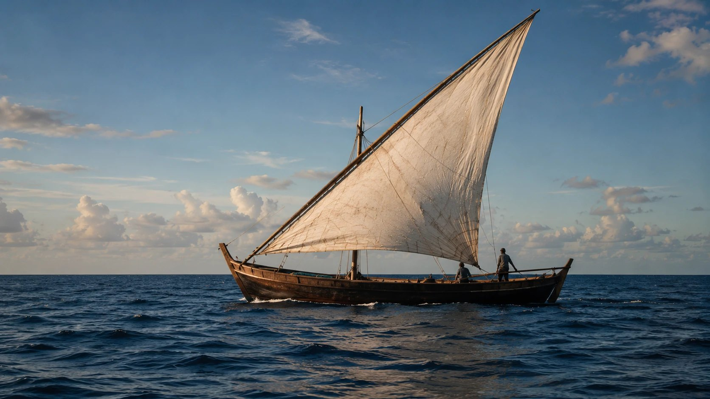
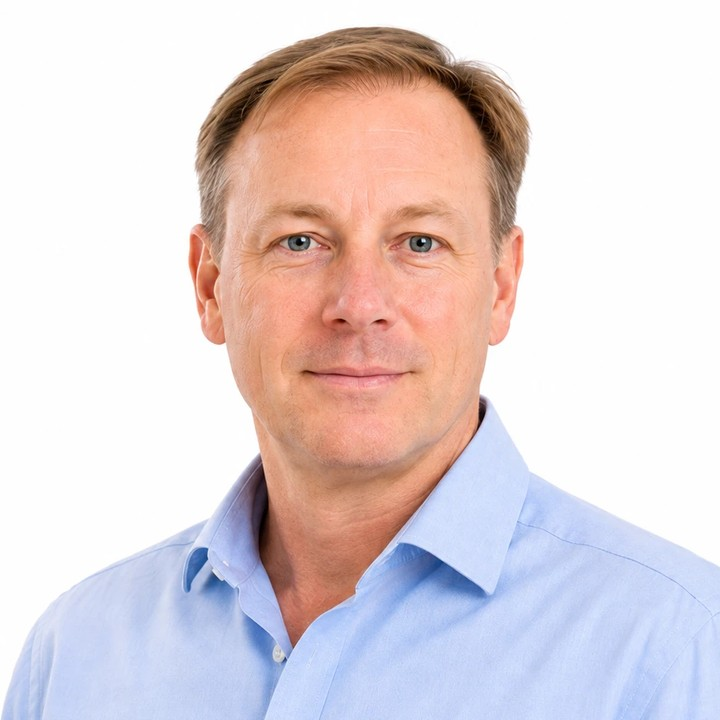

Driving resilience in Big Ocean States
An impact-led blended finance fund bringing meaningful scale, focus and transformative blue economy investment to the island nations that steward a third of the world’s ocean, and receive a fraction of the finance.
Big Ocean States across the Caribbean, Pacific, Atlantic and Indian Ocean
Of global biodiversity sits within these states, alongside 40% of the world’s coral reefs
Of the world’s ocean stewarded by these states through their EEZs
People live in these states, and depend on the ocean around them
The opportunity
A third of the world’s ocean, and a fraction of the finance
Big Ocean States steward roughly a third of the world’s ocean through their exclusive economic zones. The blue economy they depend on is expected to double by 2030. The investment structures that would finance it were designed for continental markets, and do not fit.
Of the world’s ocean, stewarded through the exclusive economic zones of these states
Expected annual value of the global blue economy by 2030, from $1.5tn today
Of the world’s coral reefs sit within these states, alongside over 20% of global biodiversity
Outrigger originates and structures investable businesses on the islands themselves, links comparable opportunities across regions so that individually small deals reach institutional scale, and invests across the capital structure, equity, private credit, and blended structures where the risk profile genuinely requires them.
That work spans six sectors of the island blue economy, chosen because island economies depend on them and because environmental and economic resilience there are the same problem.
Sustainable blue infrastructure
Circular economy & blue technology
Ridge to reef
Ocean-based renewable energy
Sustainable seafood
Ocean conservation & ecotourism

What it looks like
From thesis to deployment
Outrigger deploys through two distinct routes. The fund invests. The Technical Assistance Facility makes grants to projects at the stage before they are investable, so that a pipeline exists at all. The facility is running; these are three of its four grants.
A supply chain for invasive lionfish
Lionfish leather to the fashion industry, meat to the pet food industry, and a new revenue stream for local fishers.
INVERSA · Grant, January 2026
Electricity from sargassum
Sargassum and organic waste become biogas, fertiliser and grid electricity in a commercial-scale pilot.
SarGas Limited · Grant, December 2025
Seaweed farming for reef resilience
A community-led cooperative offering alternative livelihoods to fisher families in Western Province.
Positive Change for Marine Life · Grant, March 2026
A grant from the facility is not an investment, and it is not a commitment by Outrigger Impact Fund I to invest. Each project’s expected outcomes are set out in the grant portfolio.
Impact
Climate resilience. Ocean health. Inclusive economic growth.
Impact is measured against a published framework of seven themes and fourteen indicators, tailored to island states, with ESG and impact assessment embedded in the investment process rather than reported afterwards.
Anchor investors
Who committed at first close
Two development finance institutions made cornerstone commitments to Outrigger Impact Fund I at its first close in July 2026.

Technical Assistance Facility
Who backs OTAF
The Technical Assistance Facility is funded separately from the fund, by grant.


Outrigger Impact Fund I
The fund reached first close in July 2026
Outrigger Impact Fund I is a blended finance vehicle providing equity and debt financing to blue economy businesses across Small Island Developing States. It reached first close on 28 July 2026 with cornerstone commitments from the Nordic Development Fund and the Luxembourg–European Investment Bank Climate Finance Platform, and is targeting a total size of US$100 million with a final close anticipated in 2027.
Information about the fund’s strategy, structure and terms is a financial promotion under the Financial Services and Markets Act 2000. It is not published on this website. Professional investors who would like to know more are welcome to get in touch, and materials are provided on request following the manager’s eligibility checks.
Ocean fund management, transaction structuring, ESG and impact measurement, and operations, with prior experience deploying capital into blue economy projects across the Global South.

Simon Dent
Managing Director
Jeremy Milward
Managing Director
Emma Lear
ESG & Impact Director
Abigail Mottur
Impact Finance Associate
Ines Henriques
Operations Director